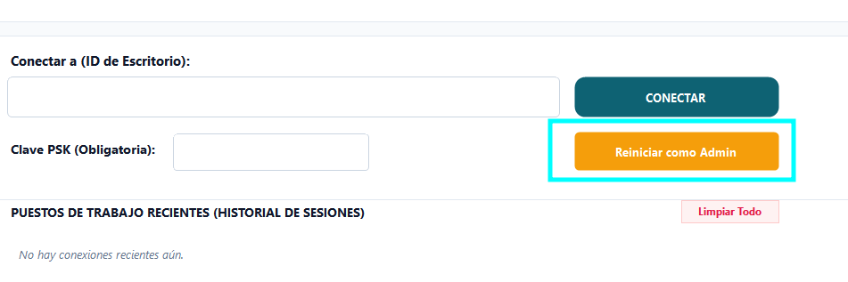
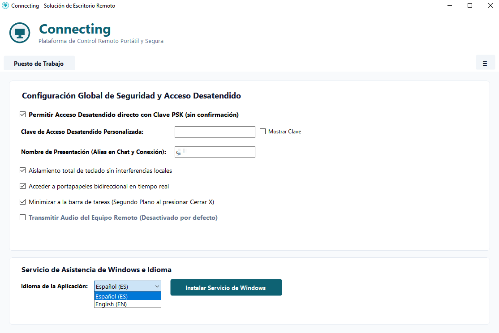
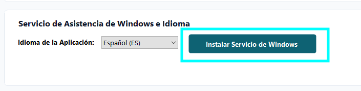

Documentación Técnica Oficial - Connecting
Connecting Remote Desktop es una solución open-source portátil, cifrada y liviana de control y asistencia remota en tiempo real diseñada para Windows y Linux con servidor de relevo de sockets TCP en Node.js.
1. Arquitectura de Transmisión y Ejecución en Windows
Para garantizar una compatibilidad perfecta en entornos de Directorio Activo (AD) y prevenir bloqueos de antivirus (Windows Defender, Chrome SmartScreen), la aplicación se ejecuta sin auto-escalamiento inicial (`asInvoker`) por defecto en modo portátil.

Figura 1: Interfaz Principal de Connecting mostrando ID permanente, Clave PSK y Conexión Directa.
Modelo de Ejecución y Elevación UAC:
- Modo Estándar (Por Defecto): Se ejecuta en 1 segundo como usuario portátil sin solicitar contraseñas ni diálogos UAC. Permite conexión remota, soporte gráfico y transferencia de texto.
- Modo Administrador (`Reiniciar como Admin`): La aplicación incluye un botón dedicado junto al ingreso de clave PSK para reiniciar con elevación UAC voluntaria cuando se requiere controlar aplicaciones administrativas (`cmd/powershell as admin`, Administrador de Tareas, instaladores).

Figura 2: Ubicación del botón de Elevación UAC Voluntaria "Reiniciar como Admin".
- Inyección Win32 `SendInput`: Motor de inyección de ratón y teclado mediante `SendInput` oficial de Win32, garantizando control 100% granular sobre diálogos UAC y consolas administrativas.
- Multiventana por Pestañas (Estilo AnyDesk): Soporte para múltiples sesiones remotas simultáneas dentro de una misma ventana mediante pestañas dinámicas y un botón `[+]`. Al cerrar una pestaña solo se finaliza esa sesión, manteniendo el cliente principal abierto.

Figura 3: Sistema de Navegación Multi-Sesión por Pestañas Estilo AnyDesk.

Figura 4: Transmisión Full HD en Pantalla Completa a 60 FPS con Calidad Adaptativa.
- Servicio de Windows (`ConnectingService`): Permite la instalación del cliente como Servicio de Windows (`NT AUTHORITY\SYSTEM` en Sesión 0) para asistencia desatendida continua y soporte de reinicio remoto.

Figura 5: Panel de Configuración e Instalación/Desinstalación del Servicio de Asistencia de Windows.
2. Arquitectura y Estado de Linux
La versión cliente de Linux se encuentra en desarrollo activo dentro de la plataforma open-source:
- Entornos de Escritorio (DE): Conexión gráfica directa para distribuciones con entornos X11 / Wayland (GNOME, KDE, XFCE).
- Sesiones Sin Escritorio (Headless / TTY): Para servidores o terminales sin interfaz gráfica, Connecting integra una emulación de consola nativa tipo TTY/SSH con stream directo de paquetes binarios (`0x07`).
3. Estructura del Repositorio (`build/`) y Scripts de Automatización
Los archivos fuente genéricos libres y scripts de automatización para construir tus propios binarios o desplegar servidores privados se encuentran organizados en la raíz del repositorio oficial en GitHub:
Compilando tu versión privada de Windows:
El código fuente genérico en `build/windows/` incluye una opción integrada en el panel de **Configuración & Seguridad** para especificar un servidor Relay personalizado (vacío por defecto). También puedes compilar directamente especificando el parámetro en `build.ps1`:
4. Servidor Relay Privado y Validación de Seguridad
El ejecutable pre-compilado se conecta a un nodo oficial de relevo de la comunidad, pero cualquier usuario o empresa puede desplegar su propio servidor Relay en su red local o VPS. El servidor Relay funciona únicamente como un intermediario (broker de conexión) y no almacena ni decodifica datos de las sesiones.
Validación de Certificados & Handshake:
- Handshake con CA del Servidor: Al conectar, la app envía credenciales validadas con la CA del servidor Relay. Solo tras validar el handshake `CONNECT:ID:TARGET:PSK`, el servidor registra el ID como listo para recibir tráfico.
- Rotación & Persistencia: Los nodos generan y rotan IDs únicos y claves PSK seguras, permitiendo tanto sesiones desatendidas persistentes como conexiones temporales de un solo uso.
- Aislamiento de Servidor: La infraestructura interna del servidor no se expone a los clientes remotos, protegiendo las direcciones IP reales de ambos puestos.
5. Cumplimiento de Estándares Open Source & SignPath Foundation
Para cumplir con los estándares de la Free Software Foundation (FSF) y la certificación de código abierto:
- Licencia Open Source Clara: Todo el código fuente en `build/` se distribuye bajo licencias abiertas permisivas sin costos ni limitaciones comerciales.
- Solicitud de Firma SignPath Foundation (En Proceso): El proyecto ha solicitado el patrocinio de firma digital gratuita de SignPath Foundation para firmar los binarios oficiales de release con certificados EV Authenticode de código abierto. Esto permitirá activar la bandera `uiAccess="true"` en binarios firmados por una CA pública confiable, logrando el control automático nativo de escritorios de seguridad UAC (`Winlogon` / SecureDesktop) sin requerir instalación previa del Servicio de Windows.
6. Soporte Técnico y Repositorio Oficial
Puedes consultar el código fuente completo, reportar fallas o contribuir al proyecto en GitHub: https://github.com/jh4n3r/connecting.
Para más información sobre el uso legal, consulta los Términos de Licencia y Servicio.